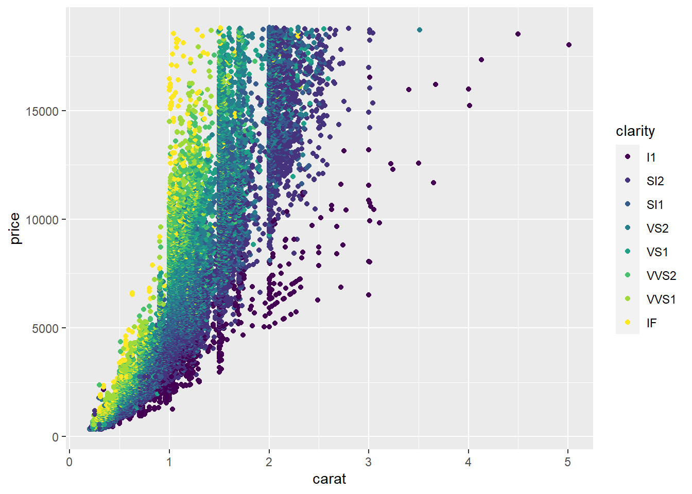

25 Diamonds Practice
25.1 Use the diamonds data set found in the ggplot2 package to answer these questions. You may want to review the data before starting using the help options.
- How many diamonds in this set have a
cutconsidered ideal?
#> # A tibble: 1 × 1
#> n
#> <int>
#> 1 21551- How many diamonds in this set have a
cutconsidered ideal and have a color of E?
#> # A tibble: 1 × 1
#> n
#> <int>
#> 1 3903- How many diamonds in this set have a
cutconsidered ideal and have a color of E or D?
- How many diamonds in this set have a
#> # A tibble: 1 × 1
#> n
#> <int>
#> 1 6737- Organize the average price by cut in descending order.
#> # A tibble: 5 × 2
#> cut mean
#> <ord> <dbl>
#> 1 Premium 4584.
#> 2 Fair 4359.
#> 3 Very Good 3982.
#> 4 Good 3929.
#> 5 Ideal 3458.- Determine the average price and standard deviation for
idealcut diamonds.
#> # A tibble: 1 × 2
#> mean std_dev
#> <dbl> <dbl>
#> 1 3458. 3808.- Organize the average price by cut and color in descending order.
#> # A tibble: 35 × 3
#> # Groups: cut [5]
#> cut color price
#> <ord> <ord> <dbl>
#> 1 Premium J 6295.
#> 2 Premium I 5946.
#> 3 Very Good I 5256.
#> 4 Premium H 5217.
#> 5 Fair H 5136.
#> 6 Very Good J 5104.
#> 7 Good I 5079.
#> 8 Fair J 4976.
#> 9 Ideal J 4918.
#> 10 Fair I 4685.
#> # … with 25 more rows- Use ggplot2 to make a plot similar to this:

- Use ggplot2 to make a plot similar to this:

- Predict price of a 2.3 carat diamond with a table of 70 and a depth of 55.
#> [1] 15447.52- In descending order, how many diamonds are there of each clarity?
#> # A tibble: 8 × 2
#> clarity n
#> <ord> <int>
#> 1 SI1 13065
#> 2 VS2 12258
#> 3 SI2 9194
#> 4 VS1 8171
#> 5 VVS2 5066
#> 6 VVS1 3655
#> 7 IF 1790
#> 8 I1 741